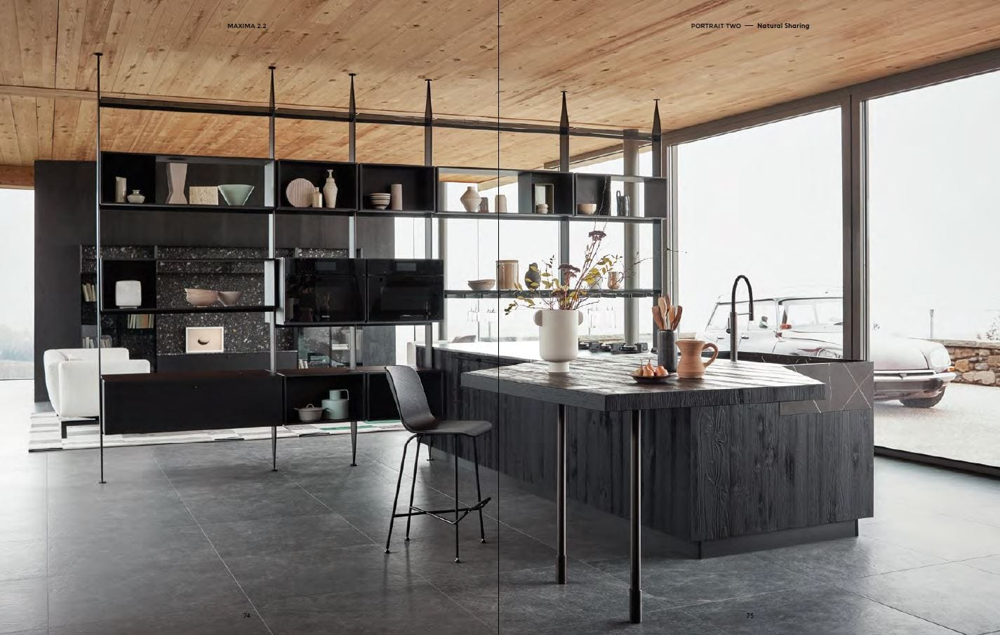
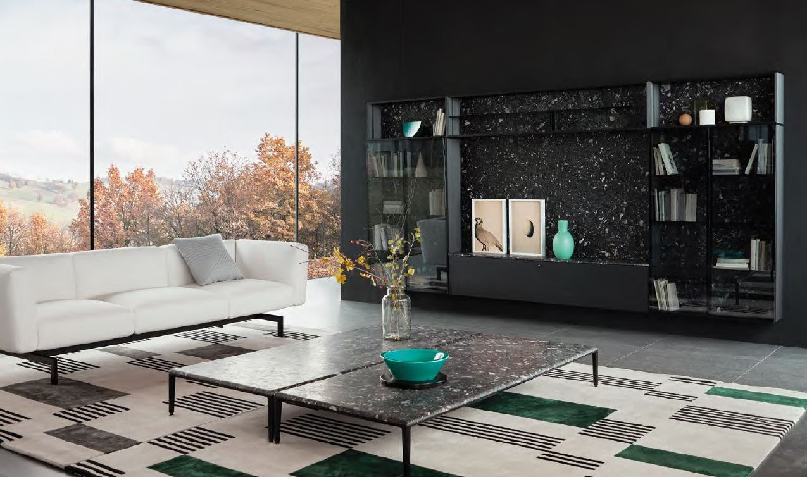
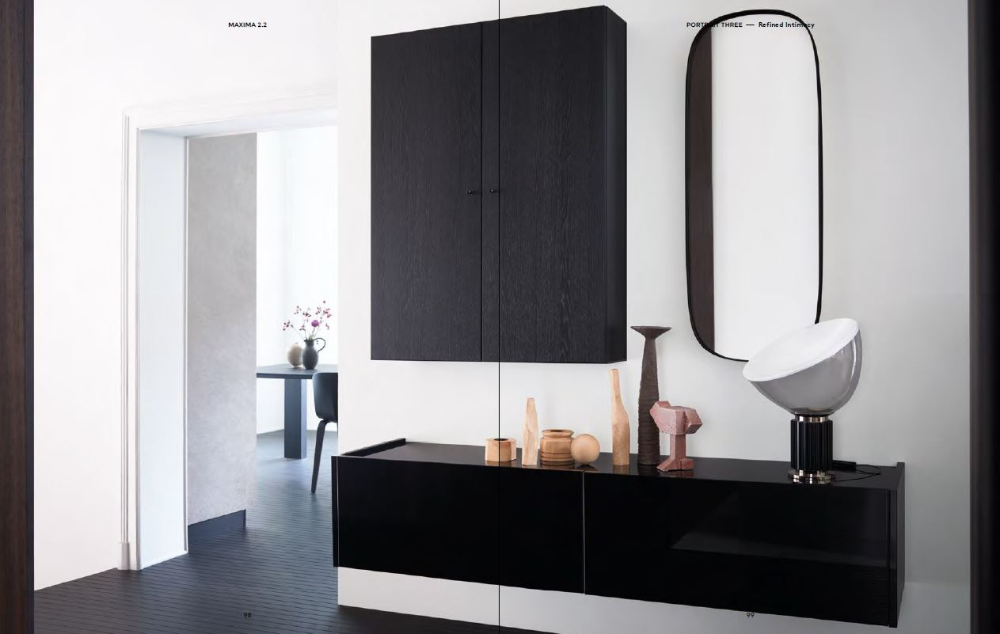
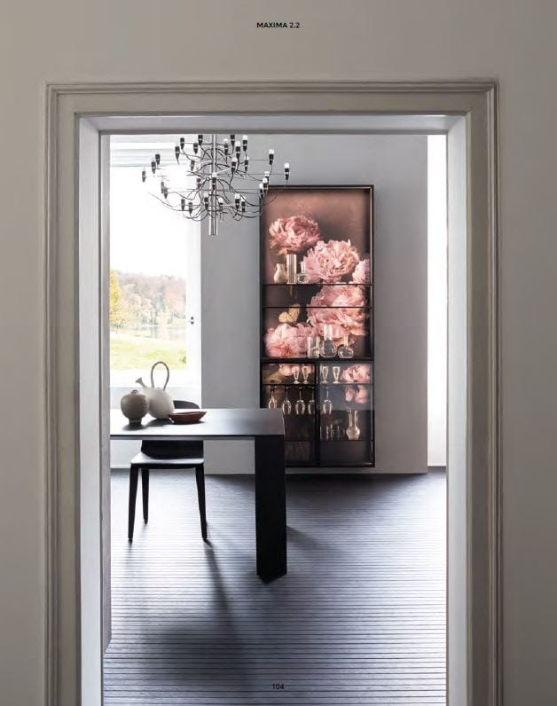
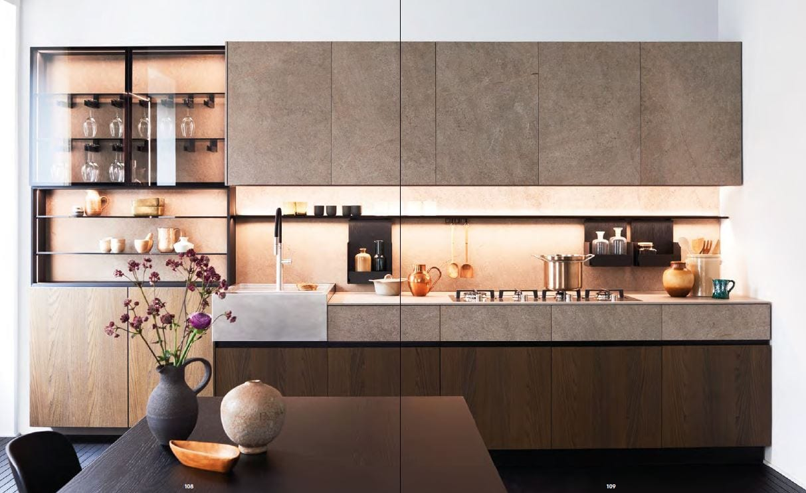
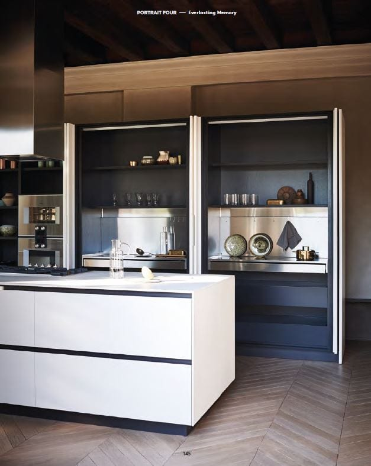
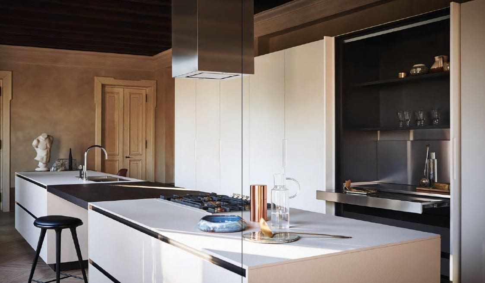
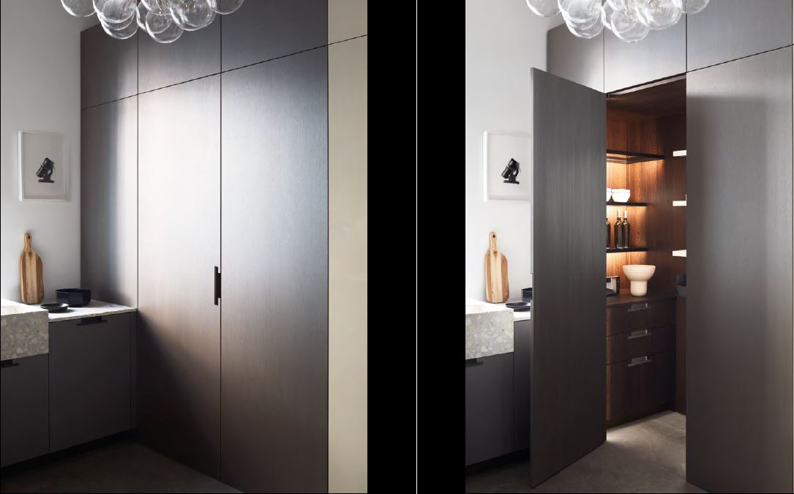
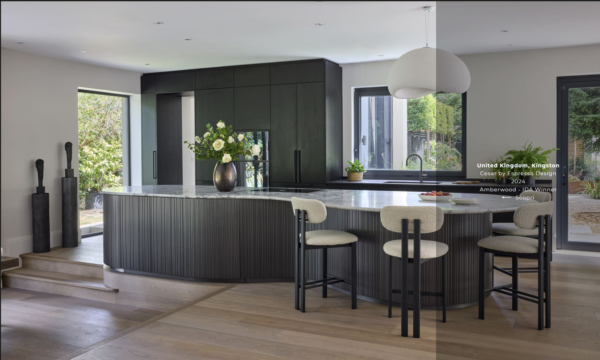

Maxima 2.2
Design by R&D Cesar
Maxima 2.2 — универсальная архитектурная система Cesar, отличающаяся широкими возможностями для самовыражения. Более 160 финишей в сочетании с различными способами открывания делают её гибким проектным инструментом, сохраняющим чёткость линий и внимание к материалам в любой компоновке.
Система органично сочетается с другими коллекциями, переходя из кухни в жилую зону без потери единства стиля. Модульность и технологичность здесь не противоречат эстетике — они её усиливают.
Широкий выбор материалов, цветов и систем открывания позволяет создать пространство, которое точно отражает характер и образ жизни своего владельца.


Жизнь — это перемены. Каждый день я принимаю решения и сталкиваюсь с событиями, которые помогают понять, кто я есть. Развиваясь, я остаюсь верна своему представлению о себе — мечте, быть может, давней, в которой я была счастлива, умела ценить красоту во всех её проявлениях и восхищаться её чистотой. Maxima 2.2 создана командой дизайнеров R&D Cesar — внутренним бюро фабрики, которое объединяет производственную точность и архитектурное мышление. Пространство, материал и технология работают как единая система — строгая, но способная адаптироваться к любому интерьеру.



Versatile
Мне никогда не бывает достаточно. Всегда есть куда расти — деталь, которую можно улучшить, другая точка зрения, более глубокое ощущение.
Нам нужна дисциплина, чтобы раскрыть свой потенциал. Умение сосредоточиться на важном — первый шаг к тому, чтобы понять, чего мы действительно хотим.



